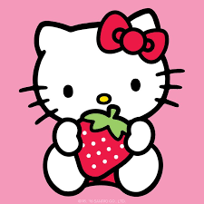

<!DOCTYPE html>
<html>
    <head>
        <tittle>mi pagina web</tittle>
 <MARQUEE  Direction="left" BGCOLOR="pink" H1><font size="20"><font color="black">Hello Kity<H1><FONT></MARQUEE>
            <hr>
            <hr>
            <hr>
            <hr>

    </body>
</html>
<H3><FONT SIZE="4"><FONT COLOR="pink" FACE="CALIBRI" <p>Hello Kitty es uno de los personajes más icónicos de la cultura pop, creado por la empresa japonesa Sanrio en 1974. Diseñada por Yuko Shimizu, esta adorable gatita blanca con un lazo en la oreja izquierda ha conquistado el corazón de millones de personas en todo el mundo. A pesar de su apariencia simple y su falta de boca, su diseño ha sido clave para que los fanáticos proyecten sus propias emociones en ella. Según su historia oficial, Hello Kitty nació en Londres el 1 de noviembre de 1974 y pertenece a una familia conformada por sus padres, George y Mary White, y su hermana gemela, Mimmy. Su filosofía se basa en la amistad, la ternura y la felicidad, valores que la han convertido en un símbolo de amor y positividad a nivel global.

<p><H3><FONT>


    <hr>
</br></br>

  <center><center>
    <hr>

<H3><FONT SIZE="2"><FONT COLOR="red"<p>El impacto de Hello Kitty ha trascendido más allá de los productos de papelería y juguetes para niños, convirtiéndose en una marca multimillonaria. Desde los años 80, su imagen ha aparecido en ropa, accesorios, electrodomésticos e incluso en colaboraciones con marcas de lujo como Swarovski y Balenciaga. Además, existen cafés temáticos, parques de atracciones y hasta aviones decorados con su imagen. Su influencia ha sido tan grande que ha protagonizado programas de televisión, videojuegos y películas, expandiendo su universo más allá del mundo infantil. En Japón, se considera un ícono de la cultura kawaii, que representa lo tierno y adorable, y su popularidad sigue vigente incluso después de varias décadas.

.<p><H3><FONT>


    <hr>
</br></br>
  <center><center>

    <hr>


 <br>
 <H3><font size="5"><font color="purple"><p>
A pesar de los cambios en las tendencias, Hello Kitty ha sabido reinventarse sin perder su esencia, logrando conectar con diferentes generaciones. Sanrio ha lanzado múltiples versiones del personaje adaptadas a la moda y al entretenimiento actual, incluyendo colaboraciones con artistas, marcas de tecnología y series animadas modernas. Su éxito radica en su capacidad de evocar nostalgia en los adultos mientras sigue atrayendo a nuevas audiencias con su dulzura y simplicidad. Además, su mensaje de amistad y amabilidad sigue siendo relevante en la actualidad, convirtiéndola en más que un simple personaje: un ícono cultural atemporal.

  <p>
<H3><FONT>

    <hr>


</br></br>

  <center><center>

    </center>
<marquee direction="up"><h1><table></table></h1></marquee>
<table border="2"
<caption>eso es una tabla
    </caption>
    <tr>
        <td colspan=2>celdas al b1 unidades</td></tr>
        <tr>
            <td>celda b2</td></tr>
        </table>

    <hr>
    <br><br>
    <table border=1>
    <caption ALIGIN=top>tutilo arriba</caption>
    <tr>
       <th>enero</th>
       <th>febrero</th>
       <th>marzo</th>
       </tr>
      <td>
      <td>celda 1</td>
      <td>celda 2</td>
      <td>celda 3</td>
      </td>
    </table>    

      <hr> <hr>
      <h1>longitud horizontal de las tablas</h1>
      <p>tabla que ocupa el 50% de las pantalla, y cuyas celdas estan dimensionadas al 50% cada una respecto a la longitud total de tabla</p>
      <table border width="50%">
        <tr><td>width=50%</td><td>width=50%</td>
        </tr>
        <tr><td>celda 3</td><td>celda 4</td>
        </tr>
      </table>
      <hr> <hr> 
      <table border>
        <tr><td bgcolor="purple">texto morado</td>
        <td bgcolor="blue">texto azul</td>
      </tr>
      <tr><td bgcoolor="green">texto verde</td>
        <td bgcolor="browm"> texto cafe</td>
      </tr>
      <hr> <hr>
      <center><table border>
        <table border>
            <tr><td bgcolor="blue"></td>
                <td bgcolor="browm"></td>
                <td bgcolor="green"></td>
            </tr>
            <tr><td bgcolor="blue"></td>
            <td bgcolor="red"></td>
            <td bgcolor="skyblue"></td>
        </tr>
        <tr><td bgcolor="white"></td>
            <td bgcolor="purple"></td>
            <td bgcolor="black"></td>
        </tr>
      </table>
    </center>


